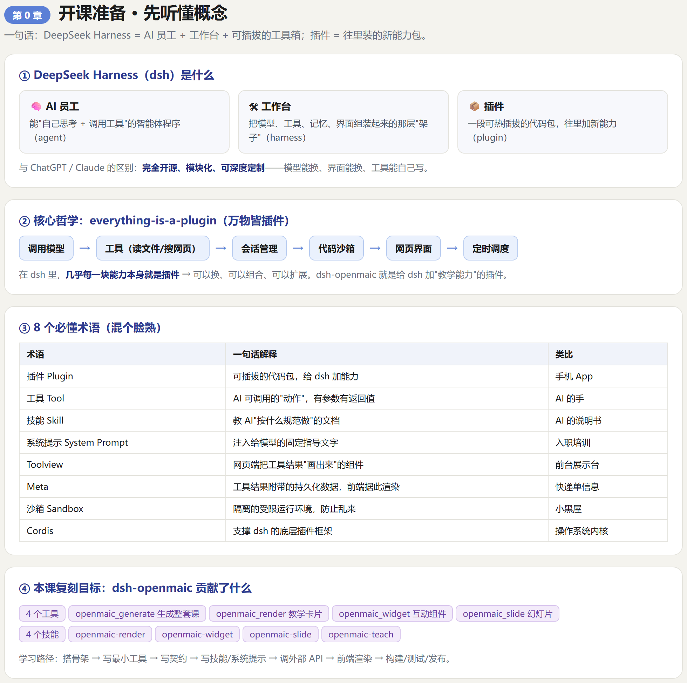
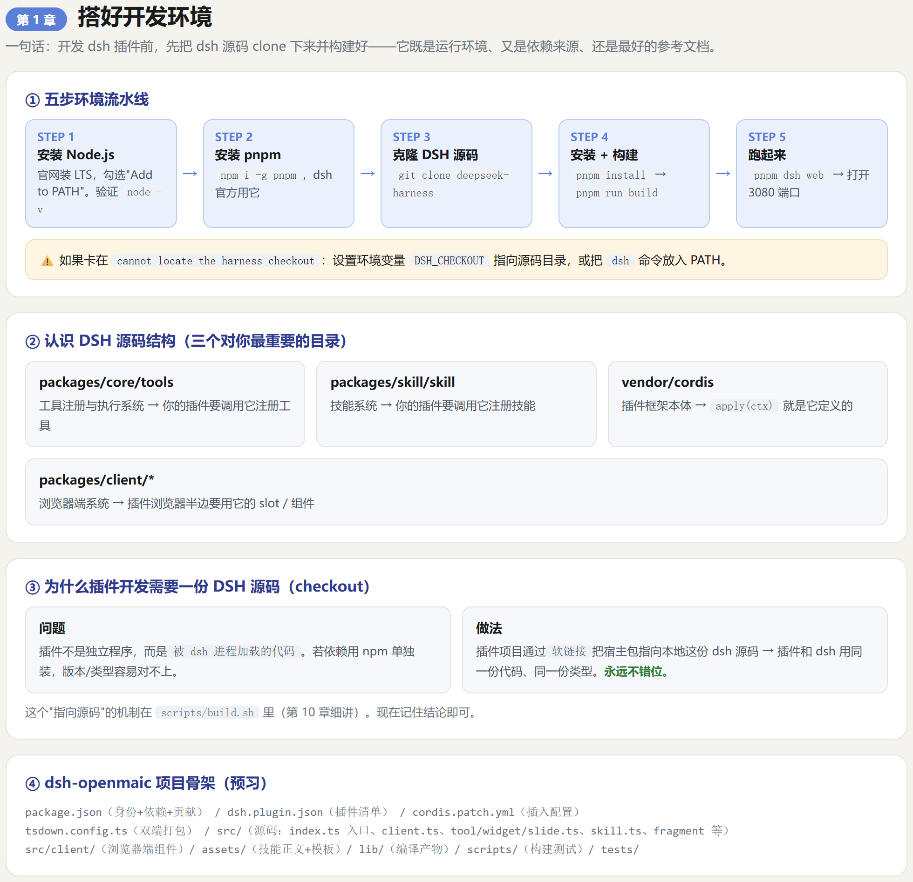
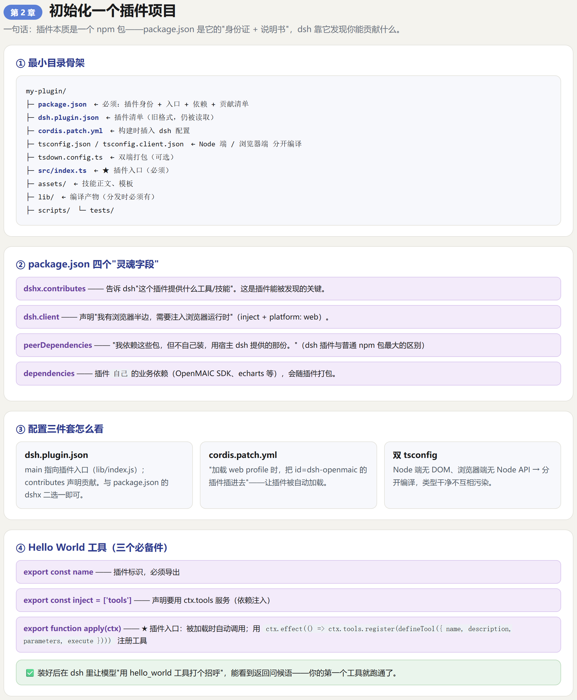
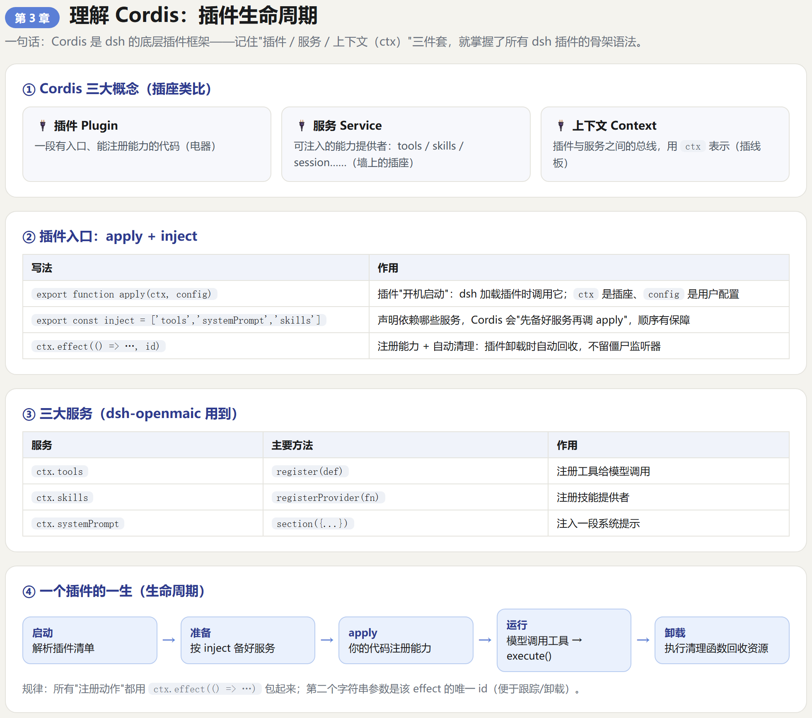
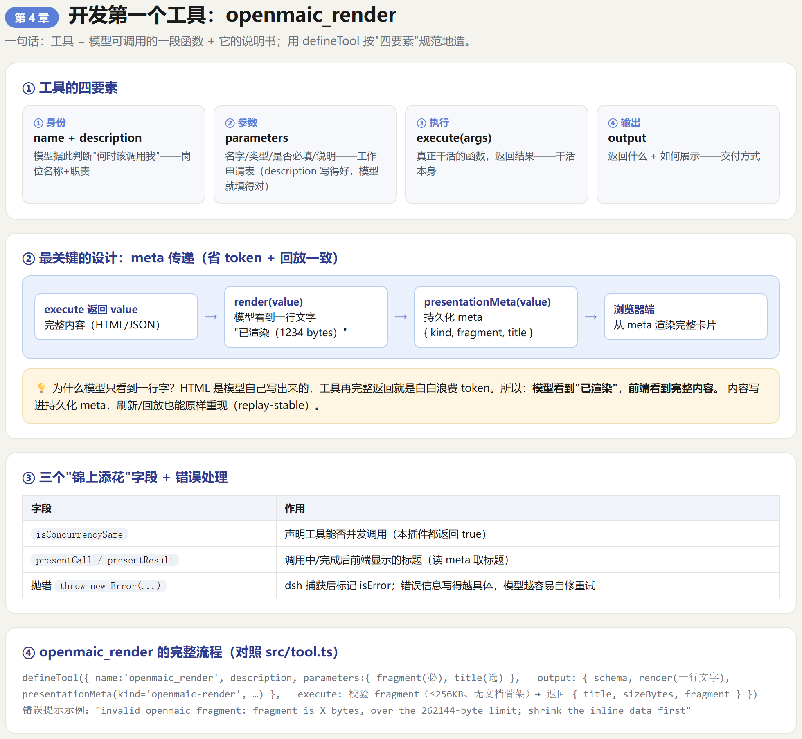
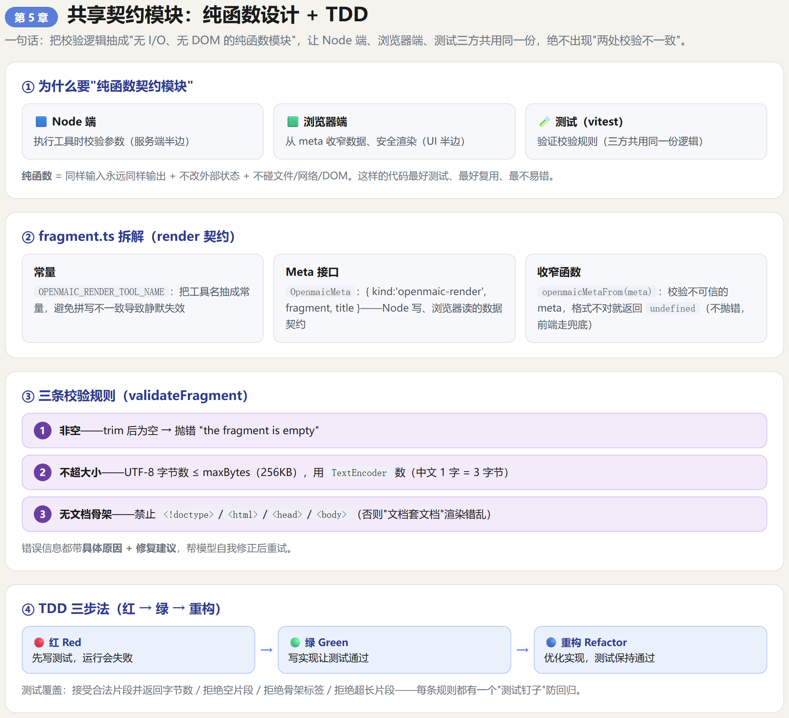
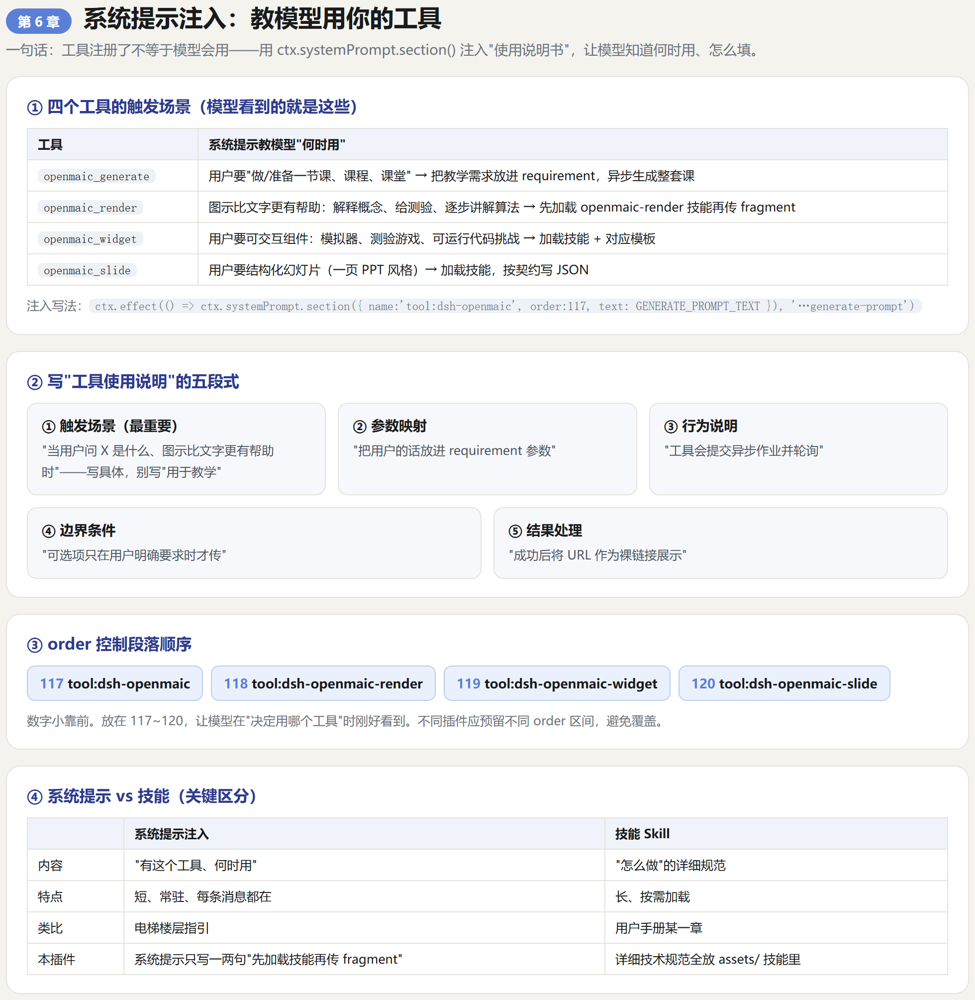
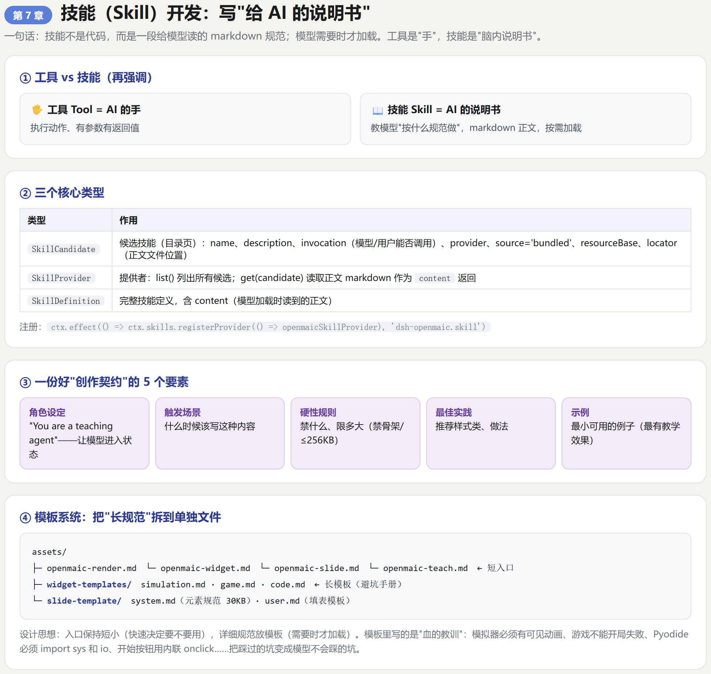
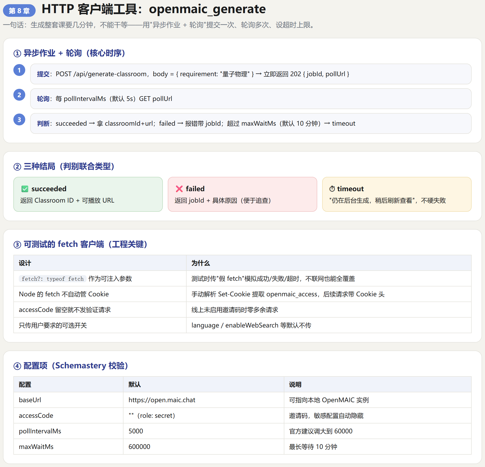
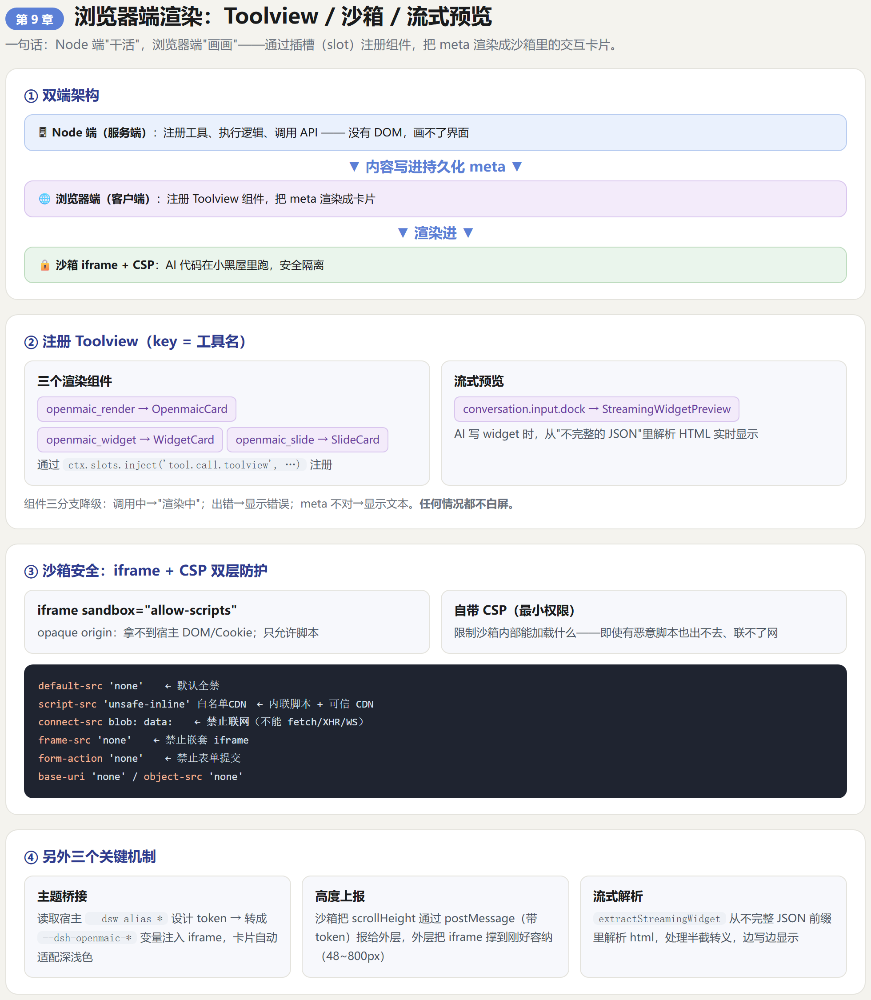

DeepSeek Harness 插件开发实战课程
以
dsh-openmaic为案例，从零带你开发一个 DeepSeek Harness 插件。
对象：对 DeepSeek Harness 不熟、但想学会开发其插件的开发者。
要求：无需任何 dsh 经验，只需会一点 TypeScript / JavaScript 和命令行操作。
第 0 章 开课准备・先听懂概念
🖼 本章信息图（原 HTML 源文件在
课程信息图/第0章.html）

本章目标：在写任何代码之前，先用 30 分钟把 "DeepSeek Harness 是什么、插件是怎么回事" 这层窗户纸捅破。
0.1 这门课能让你学会什么
学完这门课，你将能独立完成以下事情：
- 看懂 dsh-openmaic 这样的插件项目（代码结构、每段代码在干嘛）；
- 从零初始化一个自己的 dsh 插件；
- 给插件添加工具（Tool）—— 让 AI 多一个 "超能力"；
- 给插件添加技能（Skill）—— 让 AI 知道 "按什么规范做"；
- 让工具在聊天界面里渲染出漂亮的卡片（浏览器端开发）；
- 配置构建、测试，把插件打包发布。
一句话目标：让一个原本只会 "打字" 的 AI 助手，装上你的插件后学会 "做卡片、做幻灯片、做互动小游戏"。
0.2 DeepSeek Harness 到底是什么
一个类比
想象你是老板，雇了一个能力很强但 "空手" 的 AI 员工。它很聪明，但手边没有工具。
- DeepSeek Harness（简称 dsh） 就是这个 AI 员工的 "工作台 + 工具箱"。
- 工作台上预装了一些基础工具（读文件、执行命令、浏览网页……）。
- 但有些专业工具工作台上没有，需要你 安装插件（plugin） 来补充。
所以：
DeepSeek Harness = AI 员工 + 工作台 + 可插拔的工具箱
插件（plugin） = 装进工作台的一套"新能力包"
官方的定义
DeepSeek Harness（
dsh）是 DeepSeek AI 开发的开源
agent harness
（智能体运行框架）。
它采用
"万物皆插件"（everything-is-a-plugin）
架构，底层由
Cordis
框架驱动。
拆开看三个关键词：
| 关键词 | 含义 | 大白话 |
|---|
它和你听过的 AI 产品有什么关系
你可能用过 ChatGPT、Claude、Cursor……dsh 和它们类似，但有一个关键区别：dsh 是完全开源的、模块化的、开发者可深度定制的。你可以把里面的 "模型" 换成别的、"界面" 换成别的、"工具" 换成自己写的 —— 这正是它的哲学。
0.3 核心哲学：everything-is-a-plugin（万物皆插件）
这是理解 dsh 最重要的一个概念。意思是：
dsh 里几乎每一块能力，本身就是 "一个插件"。
连这些听起来很 "基础" 的东西都是插件：
| 能力 | 在 dsh 里是 |
|---|
这带来三个好处：
- 可以换：不喜欢某个模型，换一个插件就行；
- 可以组合：把不同插件拼在一起，得到自己的专属助手；
- 可以扩展：写一个新插件，就等于给 dsh 加了一项能力。
而 dsh-openmaic 就是这样一个给 dsh 增加 "教学能力" 的插件。
0.4 关键术语表（这门课会反复用到）
先混个脸熟，后面每一章都会细讲。
| 术语 | 英文 | 一句话解释 | 类比 |
|---|
0.5 需要的工具链
| 工具 | 作用 | 建议 |
|---|
⚠️ 重要提示：dsh 目前是
developer preview（开发者预览版）
，迭代很快，
会有破坏性变更
。所以 "照着官方文档 + 源码" 学习是最可靠的。
0.6 案例全景：我们这门课要复刻什么
为了让学习有的放矢，我们全程以 dsh-openmaic 为活案例。先看它 "长什么样"—— 它给 dsh 贡献了：
dsh-openmaic 插件
│
├── 4 个工具（AI 的动作）
│ ├── openmaic_generate 生成整套在线课堂（调用外部服务）
│ ├── openmaic_render 渲染教学卡片（本地）
│ ├── openmaic_widget 渲染互动组件（本地）
│ └── openmaic_slide 渲染幻灯片（本地）
│
├── 4 个技能（AI 的说明书）
│ ├── openmaic-render
│ ├── openmaic-widget
│ ├── openmaic-slide
│ └── openmaic-teach
│
├── 4 段系统提示（教模型用工具）
│
├── Node 端代码（服务端半边，注册/执行）
├── 浏览器端代码（UI 半边，渲染卡片）
└── 构建/测试配置
我们的学习路径（为什么按这个顺序）
写插件有一个 "从内到外" 的自然顺序：
- 先会搭骨架（项目怎么初始化）→ 第 2 章
- 再写最小的工具（一个能跑的 hello world 工具）→ 第 4 章
- 再写契约与校验（让工具更健壮）→ 第 5 章
- 再写技能和系统提示（让 AI 会用它）→ 第 6、7 章
- 再写客户端调用外部 API（更真实的工具）→ 第 8 章
- 再写浏览器端渲染（让结果变成好看的卡片）→ 第 9 章
- 最后是构建、测试、发布 → 第 10、11、12 章
每一步，我们都会对照 dsh-openmaic 的真实代码。
动手练习 0-1（热身）
思考并写下来：
- "工具" 和 "技能" 的区别，用自己的话解释一遍；
- 如果你要做一个 "翻译插件"，它需要：几个工具？几个技能？各是什么？
- 看看自己的电脑上有没有 Node.js 和 git（终端里执行
node -v、git --version）。
想不出答案也没关系，学完第 4、7 章你自然就懂了。
第 1 章 搭好开发环境
🖼 本章信息图（原 HTML 源文件在
课程信息图/第1章.html）

本章目标：把 dsh 跑起来，认识 dsh 的源码结构，并理解 "为什么插件开发需要一份 dsh 源码"。
1.1 安装 Node.js
dsh 是 Node.js 项目。官网下载 LTS 版本安装即可（https://nodejs.org）。
装好后在终端验证：
node -v # 看到 v20.x / v22.x 之类的版本号就对了
npm -v # npm 会随 Node 一起装好
Windows 提示：安装时一路 "下一步"，勾选 "Add to PATH"（加入系统路径），装完重开终端让环境变量生效。
1.2 安装 pnpm
dsh 官方使用 pnpm 作为包管理器。全局安装：
npm install -g pnpm
pnpm -v # 验证
1.3 获取 DeepSeek Harness 源码
插件开发需要一份 dsh 的源码（官方叫 checkout），原因我们 1.6 会说。
# 找个工作目录，比如 D:\dev
cd D:\dev
git clone https://github.com/deepseek-ai/deepseek-harness.git
cd deepseek-harness
# 安装依赖（dsh 仓库很大，耐心等）
pnpm install
# 构建（把 TypeScript 编译成可运行产物）
pnpm run build
⚠️ 这一步可能耗时较长（下载大量依赖、编译很多包）。如果网络慢，可以设置镜像源。
1.4 运行 dsh，验证环境 OK
dsh 有两个主要入口：
# 方式一：从 npm 直接跑（不需要源码，但插件开发用不上这个路径）
npx @deepseek-ai/dsh web
# 方式二：从源码跑（我们开发插件要用这个）
pnpm dsh web
启动成功后，终端会打印：
http://127.0.0.1:3080
用浏览器打开这个地址，你会看到一个 AI 对话界面 ——这就是 dsh 的 Web UI。能正常对话，说明环境 OK。
注意：默认需要配置模型 API key 才能真对话。没配也不影响我们后面的插件开发练习。
1.5 认识 dsh 的源码结构
clone 下来的仓库里，几个关键目录：
deepseek-harness/
├── packages/ # ★ dsh 官方功能包（工具、技能、会话、界面……都在这里）
│ ├── core/ # 核心：session（会话）、tools（工具）、system-prompt……
│ ├── client/ # 浏览器端包（runtime、ui-tool、ui-slots……）
│ ├── skill/ # 技能系统
│ ├── llm/ # 模型接入
│ └── util/ # 工具包（brand 等）
├── vendor/ # ★ 第三方/底层框架（Cordis、Cosmokit、Schemastery……）
├── apps/ # dsh 主程序/CLI
├── native/ # 原生沙箱（landlock 等）
├── docs/ # 官方文档
└── package.json # 仓库根配置
三个对你最重要的目录
| 目录 | 内容 | 你为什么会用到它 |
|---|
插件开发 =
站在这些包的肩膀上，写自己的代码
。
1.6 为什么插件开发需要一份 dsh 源码（checkout）
这是新手最容易困惑的点，解释清楚：
dsh 插件不是 "独立运行的程序"，而是要被 dsh 进程加载的代码。它依赖 dsh 的很多内部包（@deepseek-ai/cordis、@deepseek-ai/dsh-tools……）。
如果这些依赖用 npm 单独装，很可能版本对不上、类型对不上，导致插件加载失败。
所以 dsh 插件项目的做法是：
插件项目自身不重复安装 dsh 的包
→ 而是通过"软链接"把它们指向本地那份 dsh 源码里的包
→ 保证插件和 dsh 用的是同一份代码、同一份类型
这个 "指向源码" 的机制，在 dsh-openmaic 的 scripts/build.sh 里能看到（我们第 10 章细讲）。现在你只需要记住一个结论：
开发 dsh 插件前，先把 dsh 源码 clone 下来并构建好，它既是 "运行环境"，又是 "依赖来源"，还是 "最好的参考文档"。
1.7 认识 dsh-openmaic 项目骨架（预习）
现在打开我们的案例项目 D:\dsh-openmaic-main，先 "看图识结构"（每部分后面章节都会细讲）：
dsh-openmaic-main/
├── package.json ← 插件身份 + 依赖 + 贡献清单
├── dsh.plugin.json ← 插件清单（旧版格式，仍被读取）
├── cordis.patch.yml ← 把插件插进 dsh 配置的"补丁"
├── tsdown.config.ts ← 双端打包配置
├── tsconfig.json ← Node 端 TS 配置
├── tsconfig.client.json ← 浏览器端 TS 配置
├── src/ ← ★ 源码
│ ├── index.ts ← 插件入口（最重要）
│ ├── client.ts ← HTTP 客户端（生成课堂）
│ ├── tool.ts ← render 工具
│ ├── widget.ts ← widget 工具
│ ├── slide.ts ← slide 工具
│ ├── skill.ts ← 技能提供者
│ ├── fragment.ts ← 共享契约（render）
│ ├── slide-meta.ts ← 共享契约（slide）
│ ├── widget-meta.ts ← 共享契约（widget）
│ └── client/ ← 浏览器端 React 组件
├── assets/ ← 技能正文 + 模板
├── lib/ ← 编译产物（随插件分发）
├── scripts/ ← 构建/测试脚本
└── tests/ ← 测试
动手练习 1-1
- 在终端运行
node -v、pnpm -v、git --version，把版本号记下来；
- 在
D:\dev下 clone dsh 源码并尝试pnpm install（可以先只到 clone 完成）；
- 对照 1.7 的骨架，在
D:\dsh-openmaic-main里找到src/index.ts，打开看一眼 —— 没关系，暂时看不懂很正常，下一章我们就从它讲起。
环境搭好了，我们进入第 2 章：初始化一个插件项目。
第 2 章 初始化一个插件项目
🖼 本章信息图（原 HTML 源文件在
课程信息图/第2章.html）

本章目标：逐字段看懂 dsh 插件项目的 "出生证明"（package.json 等配置文件），并写出第一个能注册工具的 Hello World 插件。
2.1 插件项目的最小目录骨架
一个 dsh 插件项目（对外分发版）通常长这样：
my-plugin/
├── package.json ← 必须：插件身份、入口、依赖、贡献清单
├── dsh.plugin.json ← 旧格式插件清单（可选，但 dsh-openmaic 保留了）
├── cordis.patch.yml ← 构建时插入 dsh 配置（可选）
├── tsconfig.json ← TS 编译配置（Node 端）
├── tsconfig.client.json ← TS 编译配置（浏览器端，可选）
├── tsdown.config.ts ← 打包配置（可选，若有编译产物）
├── src/ ← 源码
│ └── index.ts ← ★ 插件入口（必须）
├── assets/ ← 技能正文、模板等静态资源（可选）
├── lib/ ← 编译产物（分发时必须有）
├── scripts/ ← 构建/测试脚本（推荐）
└── tests/ ← 测试（推荐）
对照一下 dsh-openmaic，它几乎完全长这样。我们逐个文件讲。
2.2 package.json：插件的 "身份证 + 说明书"
dsh 插件本质上是一个 npm 包，所以第一个文件就是 package.json。看 dsh-openmaic 的（精简标注版）：
{
// ① 包名：@scope/name，插件的全局唯一 ID
"name": "@openmaic/dsh-openmaic",
// ② 一句话描述（会出现在插件列表里）
"description": "OpenMAIC for DeepSeek Harness: ...",
// ③ 版本号
"version": "0.4.0",
// ④ 模块类型：ESM
"type": "module",
// ⑤ 入口文件：别人 require 这个包时加载谁
"main": "lib/index.js",
"types": "lib/index.d.ts",
// ⑥ 子路径导出：外部可以按路径引入不同部分
"exports": {
".": { "types": "./lib/index.d.ts", "default": "./lib/index.js" },
"./client": "./lib/client.js", // 浏览器端入口
"./cordis.patch.yml": "./cordis.patch.yml",
"./package.json": "./package.json"
},
// ⑦ 打包发布时包含哪些文件（白名单）
"files": ["lib", "assets", "cordis.patch.yml"],
// ⑧ 许可证
"license": "MIT",
// ⑨ 要求 dsh 的最低版本
"engines": { "dsh": ">=0.0.1" },
// ⑩ ★ 给 dsh 看的"贡献清单"：这个插件贡献了哪些工具、哪些技能
"dshx": {
"contributes": {
"tools": ["openmaic_generate", "openmaic_render", "openmaic_widget", "openmaic_slide"],
"skills": ["openmaic-render", "openmaic-widget", "openmaic-slide", "openmaic-teach"]
}
},
// ⑪ ★ 构建相关：patch 文件路径 + 浏览器端注入
"dsh": {
"bundle": { "patch": "./cordis.patch.yml" },
"client": {
"inject": ["@deepseek-ai/dsh-client-runtime"],
"platform": "web"
}
},
// ⑫ 依赖：dsh 的宿主包作为 peerDependencies（不重复装，用宿主那份）
"peerDependencies": {
"@deepseek-ai/cordis": "^4.0.1-rc.1",
"@deepseek-ai/dsh-llm": "*",
"@deepseek-ai/dsh-session": "*",
"@deepseek-ai/dsh-skill": "*",
"@deepseek-ai/dsh-system-prompt": "*",
"@deepseek-ai/dsh-tools": "*",
"@deepseek-ai/schemastery": "^3.18.1-rc.1",
"react": "^18.2.0"
},
// ⑬ 开发依赖
"devDependencies": {
"tsdown": "^0.22.2",
"typescript": "^5.9.0"
},
// ⑭ 自己的业务依赖（会打进产物）
"dependencies": {
"@openmaic/dsl": "^0.8.0",
"@openmaic/generation": "^0.3.0",
"@openmaic/renderer": "^0.1.0",
"echarts": "^6.1.0",
"shiki": "^4.4.3"
},
// ⑮ 常用脚本
"scripts": {
"build": "bash scripts/build.sh",
"test": "bash scripts/test.sh",
"typecheck": "tsc -p tsconfig.json && tsc -p tsconfig.client.json"
}
}
重点讲解 4 个字段
字段 ⑩ dshx.contributes —— dsh 通过它知道 "这个插件提供什么"。这是插件能被发现的关键。
字段 ⑪ dsh.client —— 声明 "我有浏览器半边，需要注入浏览器运行时"。
字段 ⑫ peerDependencies —— 含义是：" 我依赖这些包，但不自己装，请使用宿主（dsh）提供的那份。" 这是 dsh 插件和普通 npm 包最大的区别之一。
字段 ⑭ dependencies —— 这些是插件自己的业务依赖（OpenMAIC 的 SDK、图表库等），会随插件一起打包。
2.3 dsh.plugin.json：插件清单（旧格式，仍被读取）
dsh-openmaic 还保留了 dsh.plugin.json，内容和 package.json 的 dshx.contributes 基本重复：
{
"id": "@openmaic/dsh-openmaic",
"version": "0.4.0",
"main": "./lib/index.js",
"description": "OpenMAIC for DeepSeek Harness: ...",
"engines": { "dsh": ">=0.0.1" },
"contributes": {
"tools": ["openmaic_generate", "openmaic_render", "openmaic_widget", "openmaic_slide"],
"skills": ["openmaic-render", "openmaic-widget", "openmaic-slide", "openmaic-teach"]
}
}
理解： 这是插件元信息的另一种载体。main 指向插件入口（lib/index.js），contributes 声明贡献。记住核心：插件元信息要么写在 package.json 的 dshx 字段，要么写在 dsh.plugin.json，两者都行。
2.4 cordis.patch.yml：把插件 "插进"dsh
# dsh 构建/加载时，把本插件插入到某个 profile（配置层）的插件栈里
- insert:
- id: dsh-openmaic
name: '@openmaic/dsh-openmaic'
理解： dsh 使用 Cordis 的 "层（layer）" 机制组合插件。这个 yml 告诉 dsh："加载 web profile 时，把 id 为 dsh-openmaic 的这个插件插进去。" 这样安装插件后它会被自动加载。
2.5 双 tsconfig：Node 端和浏览器端分开编译
dsh 插件有 "两副身体"（服务端 + 浏览器端），所以 dsh-openmaic 配了两份 tsconfig：
tsconfig.json（Node 端）：目标是 Node 环境，只编译服务端代码。
{
"compilerOptions": {
"target": "ES2024",
"module": "esnext",
"moduleResolution": "bundler",
"lib": ["ES2024"],
"strict": true,
"jsx": "react-jsx",
"types": ["node"]
},
"include": ["src"],
"exclude": ["src/client"] // ← 浏览器端代码排除在外
}
tsconfig.client.json（浏览器端）：目标是浏览器环境，包含 DOM 类型。
{
"extends": "./tsconfig.json",
"compilerOptions": {
"lib": ["es2022", "dom", "dom.iterable"], // ← 多了 DOM 类型
"jsx": "react-jsx",
"noEmit": true
},
"include": ["src/client", "src/fragment.ts", "src/widget-meta.ts"],
"exclude": []
}
为什么要分开？
- Node 端代码用不到
document、window这些 DOM 对象；
- 浏览器端代码用不到 Node 的
fs、process；
- 分开编译，两边的类型都干净、不会互相污染。
2.6 你的第一个插件：Hello World 工具
理论讲完，动手。新建一个最小插件项目 D:\dev\my-first-plugin：
mkdir my-first-plugin
cd my-first-plugin
Step 1：写 package.json（最精简版）
{
"name": "my-first-plugin",
"version": "0.1.0",
"type": "module",
"main": "lib/index.js",
"types": "lib/index.d.ts",
"license": "MIT",
"engines": { "dsh": ">=0.0.1" },
"dshx": {
"contributes": {
"tools": ["hello_world"]
}
},
"peerDependencies": {
"@deepseek-ai/cordis": "^4.0.1-rc.1",
"@deepseek-ai/dsh-tools": "*"
},
"devDependencies": {
"typescript": "^5.9.0"
}
}
Step 2：写插件入口 src/index.ts
// 引入工具注册的"工具定义"辅助函数
import { defineTool } from '@deepseek-ai/dsh-tools'
// 引入 Cordis 上下文类型
import type { Context as CordisContext } from '@deepseek-ai/cordis'
// 插件的名字
export const name = 'my-first-plugin'
// 声明这个插件依赖哪些服务（后面第 3 章细讲）
export const inject = ['tools']
// 上下文类型：ctx.tools 是工具注册服务
type Context = CordisContext & { tools: any }
// ★ 插件入口函数：dsh 加载插件时调用它
export function apply(ctx: Context): void {
// 注册一个名叫 hello_world 的工具
ctx.effect(() => ctx.tools.register(defineTool({
name: 'hello_world',
description: 'Say hello. 返回一句问候。',
parameters: {
name: { type: 'string', description: '你的名字' },
},
// 模型调用这个工具时真正执行的函数
async execute(args: any) {
return `Hello, ${args.name ?? 'world'}! 这是你的第一个 dsh 工具。`
},
})), 'my-first-plugin.hello')
}
Step 3：编译 + 放入 dsh 测试
npx tsc # 或用项目自己的构建脚本
把编译产物放到 dsh 的插件目录，或通过 dsh plugin add 安装（第 2.7 节）。
逐行解读这个 Hello World
| 代码 | 作用 |
|---|
装好之后，在 dsh 对话里问："用 hello_world 工具跟我打个招呼"，AI 就会调用它并显示返回值。
2.7 怎么把插件装进 dsh 验证
dsh 官方提供了插件安装命令（dsh-openmaic 的 README 就是这么写的）：
# 从 git 仓库安装（推荐：插件自带编译好的 lib/，无需构建）
dsh plugin --profile web add git+https://github.com/THU-MAIC/dsh-openmaic.git
开发期的快捷做法（本地调试）：
# 1) 用 cordis.patch.yml 把插件临时插进本地 dsh 的 web profile
pnpm dsh web --patch ./cordis.patch.yml
# 2) 或者直接把编译好的 lib/ 复制到 dsh 能找到的插件目录
然后重启 dsh web，刷新页面，看终端有没有打印插件的加载日志。
动手练习 2-1
- 把 2.6 的 Hello World 插件完整写出来（package.json + src/index.ts）；
- 在 dsh 对话里让它调用
hello_world工具，确认能看到返回的问候语；
- 试着给
hello_world加第二个参数language，让它可以返回中文或英文问候。
第 3 章 理解 Cordis：插件生命周期
🖼 本章信息图（原 HTML 源文件在
课程信息图/第3章.html）

本章目标：看懂
apply/
inject/
ctx.effect到底在干嘛 —— 这是所有 dsh 插件的 "骨架语法"。
3.1 Cordis 是什么
Cordis 是 dsh 底层的插件框架（作者说它的设计来自论文 A Programming Paradigm for Spatiotemporal Composability）。我们不需要读论文，只需要理解它的三个核心概念：
Cordis 三大概念：
├── 插件（Plugin） —— 一段有入口、能注册能力的代码
├── 服务（Service） —— 一个可注入的能力提供者（tools、skills、session……都是服务）
└── 上下文（Context）—— 插件和服务之间的"总线"，用 ctx 表示
用插座类比：
- 服务 = 墙上的插座（提供电 / 水 / 网）
- 插件 = 电器（插上就能用某种功能）
- ctx（上下文） = 那个插线板，电器靠它取电
3.2 apply 函数：插件的 "开机启动"
每个插件都必须导出 apply(ctx, config)。dsh 加载插件时调用它：
export function apply(ctx: Context, config: Config): void {
// 在这里注册你的工具、技能、系统提示……
}
| 参数 | 类型 | 作用 |
|---|
看 dsh-openmaic 的真实入口 src/index.ts，它的 apply 做了 4 件事：
export function apply(ctx: Context, config: Config): void {
// ① 注册 openmaic_generate 工具
ctx.effect(() => ctx.tools.register(defineTool({ name: 'openmaic_generate', ... })), 'dsh-openmaic.generate')
// ② 注册 openmaic_render 工具
ctx.effect(() => ctx.tools.register(openmaicRenderTool()), 'dsh-openmaic.render')
// ③ 注册 openmaic_widget / openmaic_slide 工具
ctx.effect(() => ctx.tools.register(openmaicWidgetTool()), 'dsh-openmaic.widget')
ctx.effect(() => ctx.tools.register(openmaicSlideTool()), 'dsh-openmaic.slide')
// ④ 注册技能提供者
ctx.effect(() => ctx.skills.registerProvider(() => openmaicSkillProvider), 'dsh-openmaic.skill')
// ⑤ 注入 4 段系统提示
ctx.effect(() => ctx.systemPrompt.section({ name: 'tool:dsh-openmaic', order: 117, text: GENERATE_PROMPT_TEXT }), 'dsh-openmaic.generate-prompt')
// ... 还有 3 段
}
规律：所有 "注册动作" 都用 ctx.effect(() => ...) 包起来。
3.3 ctx.effect 和 inject：注册 + 依赖声明
ctx.effect(fn, id) —— 注册并自动清理
ctx.effect(() => {
// 在这里注册工具/技能/监听器
return () => {
// （可选）返回一个"清理函数"，插件卸载时执行
}
}, 'my-plugin.some-effect') // 第二个参数是这个 effect 的唯一 id
为什么用它？ 插件可能会被动态加载 / 卸载（热更新、关闭会话）。ctx.effect 保证：
- 插件加载时注册能力；
- 插件卸载时自动回收，不会留下 "僵尸监听器"。
inject —— 声明你要用哪些服务
// 插件顶部声明：我需要 tools、systemPrompt、skills 这三个服务
export const inject = ['tools', 'systemPrompt', 'skills']
为什么声明？ 服务之间有依赖关系（比如系统提示服务可能依赖其他服务）。inject 告诉 Cordis："先把我依赖的服务准备好，再调用我的 apply。" 顺序有保障，不会出现 "服务还没就绪就使用" 的崩溃。
3.4 三大服务：tools /skills/systemPrompt
这是 dsh-openmaic 用到的三个核心服务（在 ctx 上）：
| 服务 | 类型 | 主要方法 | 作用 |
|---|
还有更多服务（session 会话、llm 模型、scope 作用域……），用到再学即可。
先掌握这三个，已经能写大部分插件。
3.5 生命周期全景
一个 dsh 插件的完整一生：
dsh 启动
│
▼
解析插件清单（package.json / dsh.plugin.json）
│
▼
按 inject 顺序准备好依赖服务
│
▼
调用 apply(ctx, config) ← 你的代码在这里注册能力
│
▼
插件的工具/技能/系统提示对模型可见
│
▼
（运行期）模型调用工具 → 执行 execute()
│
▼
dsh 关闭 / 插件被卸载
│
▼
执行 ctx.effect 返回的清理函数，回收资源
动手练习 3-1
- 打开
D:\dsh-openmaic-main\src\index.ts，把apply里的每一行注释上 "它在做什么"；
- 数一数这个插件注册了几个工具、几个技能、几段系统提示；
- 用一句话回答：
ctx.effect的第二个字符串参数（如'dsh-openmaic.render'）是用来干什么的？
现在你有了 "骨架语法"，第 4 章我们进入重头戏：完整开发一个工具。
第 4 章 开发第一个工具：openmaic_render
🖼 本章信息图（原 HTML 源文件在
课程信息图/第4章.html）

本章目标：彻底搞懂 dsh 工具（Tool）的四个要素，并对照 dsh-openmaic 的
src/tool.ts逐行学会怎么写一个 "能渲染卡片" 的工具。
4.1 一个工具由哪四样东西组成
在 dsh 里，一个工具（Tool）就是 "模型可以调用的一段函数 + 它的说明书"。它由四要素组成：
┌─────────────────────────────────────────────┐
│ 一个工具 │
├──────────────┬──────────────────────────────┤
│ ① 身份 │ name（唯一名字）+ description（描述） │
│ ② 参数 │ parameters（模型该怎么填参数） │
│ ③ 执行体 │ execute(args)（真正干活的函数） │
│ ④ 输出 │ output（返回什么 + 如何展示） │
└──────────────┴──────────────────────────────┘
| 要素 | 作用 | 类比 |
|---|
4.2 defineTool：工具的 "模板"
dsh 提供了 defineTool({...}) 帮我们规范地构造一个工具。它返回一个 ToolDefinition（工具定义对象）。
import { defineTool } from '@deepseek-ai/dsh-tools'
const myTool = defineTool({
name: 'my_tool',
description: '...',
parameters: { ... },
output: { ... },
execute: async (args) => { ... },
})
为什么用 defineTool 而不是手写对象？
- 有类型检查（写错字段编译期就报错）；
- 有默认行为（presentCall /presentResult 等有合理的默认值）；
- 它是 dsh 工具系统的 "官方入口"，后续版本兼容有保障。
4.3 参数（parameters）：告诉模型怎么填
看 dsh-openmaic 的 openmaic_render 工具参数：
parameters: {
fragment: {
type: 'string',
required: true, // 必填
description: 'The inline HTML fragment to render ...',
},
title: {
type: 'string', // 选填
description: 'Concise card title. Defaults to "OpenMAIC 课堂".',
},
}
要点：
type: 参数类型（string/boolean/number/object/array…）；
required: 是否必填；
description: 非常重要，模型靠这段文字理解该填什么；
enum: 可选值列表（比如openmaic_generate的language参数就限制为['zh-CN','en-US']）。
经验：description 写得好，模型就能填得对。 这是 "教模型用工具" 的第一步。
4.4 输出（output）：结果如何返回给模型
输出有两种作用：给模型看的文字 和 给前端看的持久化数据。
dsh-openmaic 里有个巧妙设计（TEXT_OUTPUT）：
const TEXT_OUTPUT = {
schema: { type: 'string' as const },
render: (_args: unknown, value: unknown) => [{ type: 'text' as const, text: String(value) }],
}
schema: 声明返回值的类型；
render: 把返回值转成模型能看到的一行文字。
对于 openmaic_render 工具，它的 output 更精细：
output: {
schema: {
type: 'object',
additionalProperties: false,
properties: {
title: { type: 'string', required: true },
sizeBytes: { type: 'integer', required: true },
fragment: { type: 'string', required: true },
},
},
// 模型看到的只是"一行确认"，不把整段 HTML 回灌给模型（省 token）
render: (_args, value) => [{
type: 'text',
text: `Rendered "${value.title}" inline (${value.sizeBytes} bytes). The user sees the interactive card in the conversation.`,
}],
// 前端要用的完整数据，写进 presentationMeta（见 4.5）
presentationMeta: (_args, value) => ({
kind: 'openmaic-render',
fragment: value.fragment,
title: value.title,
}),
}
这里有一个非常重要的设计思想，一定要理解：
execute 返回的 value
│
├──→ render(value) → 模型看到的一行文字（短！省 token！）
│
└──→ presentationMeta(value) → 持久化 meta，前端据此渲染完整卡片
为什么不让模型看到完整 HTML？ 因为 HTML 是模型自己写出来的，本来就在模型的输出里；如果工具再把它完整返回，上下文就被白白撑大、浪费 token。所以：模型看到 "已渲染" 三个字，前端看到完整内容。
4.5 presentationMeta：把内容交给前端的 "暗号"
presentationMeta 是工具结果里的一块持久化数据，会随工具调用一起被记录（写进 tool/result 的 meta）。
前端（浏览器端）通过读 meta 来渲染卡片。看 dsh-openmaic：
presentationMeta: (_args, value) => ({
kind: 'openmaic-render', // 一种"类型标签"，前端靠它识别这是哪种卡片
fragment: value.fragment, // 完整 HTML 片段
title: value.title,
})
为什么这样设计？ 因为对话可以被回放（刷新页面、查看历史）。如果前端只靠 "当时的返回值" 渲染，回放时就拿不到内容了。内容写进 meta，回放时就能原样重现—— 这正是 "replay-stable（回放稳定）" 的关键。
4.6 另外三个可选字段
dsh 工具还有几个 "锦上添花" 的字段，dsh-openmaic 都用到了：
| 字段 | 作用 | dsh-openmaic 的用法 |
|---|
// 工具完成后，从持久化 meta 里取出标题来展示
presentResult(_args, result) {
if (result.isError) return undefined // 出错就用默认展示
const meta = openmaicMetaFrom(result.meta) // 收窄 meta
if (meta === undefined) return undefined
return { card: 'generic', title: `OpenMAIC · ${meta.title}` }
}
4.7 错误处理：让工具 "优雅地失败"
工具在执行中发现问题，应该抛出错误（throw new Error(...)）。dsh 会捕获它，标记 result.isError = true，并把错误信息展示给模型和用户。
dsh-openmaic 的 execute：
async execute(args) {
// 校验片段，不合规直接抛错
const sizeBytes = validateFragment(args.fragment, MAX_FRAGMENT_BYTES)
const title = args.title?.trim() || 'OpenMAIC 课堂'
return { title, sizeBytes, fragment: args.fragment }
}
而 validateFragment（第 5 章细讲）会抛出类似：
throw new Error('invalid openmaic fragment: the fragment is empty')
throw new Error(`invalid openmaic fragment: fragment is ${sizeBytes} bytes, over the ${maxBytes}-byte limit; ...`)
throw new Error('invalid openmaic fragment: fragment contains a document-skeleton tag (...); ...')
错误信息写得越具体，模型越容易自己修正后重试。 这是提升插件体验的关键技巧。
4.8 完整对照：dsh-openmaic 的 openmaic_render
现在把 src/tool.ts 从头到尾 "翻译" 一遍（加注释版）：
// ① 引入工具定义函数
import { defineTool, type ToolDefinition } from '@deepseek-ai/dsh-tools'
// ② 引入"共享契约"（校验 + meta 收窄），见第 5 章
import { openmaicMetaFrom, validateFragment, OPENMAIC_RENDER_TOOL_NAME } from './fragment.ts'
// ③ 一个片段的大小上限：256KB
export const MAX_FRAGMENT_BYTES = 256 * 1024
// ④ 工具的"岗位描述"
const DESCRIPTION =
'Show the user an interactive OpenMAIC teaching card ... ' +
'Pass the markup in `fragment`: literal inline HTML only, no document skeleton.'
// ⑤ 构建工具定义
export function openmaicRenderTool(): ToolDefinition {
return defineTool({
name: OPENMAIC_RENDER_TOOL_NAME, // 'openmaic_render'
description: DESCRIPTION,
parameters: {
fragment: { type: 'string', required: true, description: '...' },
title: { type: 'string', description: '...' },
},
output: {
schema: { ... }, // 返回值结构
render: (_args, value) => [...], // 给模型看的一行文字
presentationMeta: (_args, value) => ({ // 给前端看的完整 meta
kind: 'openmaic-render', fragment: value.fragment, title: value.title,
}),
},
isConcurrencySafe: () => true, // 纯校验，可并发
async execute(args) { // 真正执行：校验 + 组装
const sizeBytes = validateFragment(args.fragment, MAX_FRAGMENT_BYTES)
const title = args.title?.trim() || 'OpenMAIC 课堂'
return { title, sizeBytes, fragment: args.fragment }
},
presentCall: () => ({ card: 'generic', title: 'OpenMAIC', kind: 'other' }),
presentResult(_args, result) { ... }, // 读 meta 展示标题
})
}
动手练习 4-1
- 写一个工具
text_counter：参数是text（必填），返回它的字符数和单词数；
- 给这个工具加上
description和参数description，让模型能正确填写；
- 让 execute 在 text 为空时抛出错误信息（模仿 validateFragment 的写法）。
第 5 章 共享契约模块：纯函数设计 + TDD
🖼 本章信息图（原 HTML 源文件在
课程信息图/第5章.html）

本章目标：理解 dsh 插件里 "共享契约模块" 的设计哲学（为什么要是纯函数），并学会用测试驱动的方式写它。
5.1 什么是 "共享契约模块"，为什么需要它
先看 dsh-openmaic 里的三个文件：
src/fragment.ts ← openmaic_render 的契约
src/slide-meta.ts ← openmaic_slide 的契约
src/widget-meta.ts ← openmaic_widget 的契约
它们有一个共同特点（源码注释原话）："No I/O and no DOM, so the node half, the browser half, and vitest all load it unchanged."
翻译：不做任何输入输出、不碰浏览器 DOM，所以 Node 端、浏览器端、测试代码三方都能原样加载它。
为什么要这样设计？
回顾架构：dsh 插件有两个半边——
Node 端（服务端） → 校验参数、执行工具
浏览器端（客户端） → 渲染卡片
测试（vitest） → 验证逻辑
如果校验逻辑写在 Node 端文件里，浏览器端就用不了；写在浏览器端，Node 端又用不了。把共享逻辑抽成 "纯函数模块"，三方共用一份，绝不重复实现、绝不出现 "两处校验不一致"。
纯函数 = 同样的输入永远得到同样的输出 + 不修改外部状态 + 不碰文件 / 网络 / DOM。这样的代码最好测试、最好复用、最不容易出错。
5.2 fragment.ts 逐行拆解
打开 src/fragment.ts，逐段看：
① 常量：工具名
/** Wire name of the tool, the keyed toolview, and the streaming-preview match. */
export const OPENMAIC_RENDER_TOOL_NAME = 'openmaic_render'
为什么把工具名单独抽出来？ 因为很多地方要用这个名字（工具注册、浏览器端 toolview 匹配、流式预览匹配），抽成常量避免拼写不一致。一个字符串错一个字母，整个功能就静默失效，抽常量是最低成本的高保障。
② meta 接口：前端和 Node 端共同的数据结构
export interface OpenmaicMeta {
kind: 'openmaic-render' // 类型标签
fragment: string // 完整 HTML 片段
title: string // 标题
}
这是 Node 端写进去、浏览器端读出来的 "数据契约"。 两边都靠 TypeScript 类型保证格式一致。
③ 校验规则：禁止文档骨架
const SKELETON_TAG = /<!doctype\b|<\s*(?:html|head|body)\b/iu
为什么禁止 ///？ 因为卡片渲染时，前端会自己提供一个完整的 HTML 文档骨架（包含 CSP 安全策略）。如果 AI 写的片段里也带了骨架，就会 "文档套文档"，渲染错乱。所以宁可拒绝，也不要渲染出一个坏掉的页面。
④ 字节数计算
export function byteLength(text: string): number {
return new TextEncoder().encode(text).length
}
用 TextEncoder 把字符串转成 UTF-8 字节，数出字节数（注意：中文一个字符是 3 字节，不能直接数 .length）。
⑤ 核心校验函数 validateFragment
export function validateFragment(fragment: string, maxBytes: number): number {
// 规则 1：非空
if (fragment.trim().length === 0) {
throw new Error('invalid openmaic fragment: the fragment is empty')
}
// 规则 2：不超大小上限
const sizeBytes = byteLength(fragment)
if (sizeBytes > maxBytes) {
throw new Error(`invalid openmaic fragment: fragment is ${sizeBytes} bytes, over the ${maxBytes}-byte limit; shrink the inline data first`)
}
// 规则 3：不含文档骨架
const skeleton = SKELETON_TAG.exec(fragment)
if (skeleton) {
throw new Error(`invalid openmaic fragment: fragment contains a document-skeleton tag (${JSON.stringify(skeleton[0])}); write only the inline body`)
}
return sizeBytes
}
设计要点：
- 三条规则 "一票否决"：任何一条不满足就抛错；
- 错误信息包含具体原因和修复建议（"shrink the inline data first"），帮助模型自我修正；
- 成功时返回字节数（调用方可能要用）。
⑥ meta 收窄函数 openmaicMetaFrom
export function openmaicMetaFrom(meta: unknown): OpenmaicMeta | undefined {
if (typeof meta !== 'object' || meta === null) return undefined
const m = meta as { kind?: unknown; fragment?: unknown; title?: unknown }
if (m.kind !== 'openmaic-render') return undefined
if (typeof m.fragment !== 'string' || typeof m.title !== 'string') return undefined
return { kind: 'openmaic-render', fragment: m.fragment, title: m.title }
}
为什么需要它？ 前端拿到的 meta 是 "不可信的原始数据"（可能缺失、可能类型不对、可能是别的插件的 meta）。这个函数负责收窄：只有格式完全正确才返回对象，否则返回 undefined，调用方据此走兜底展示。
关键：返回 undefined 而不是抛错。 因为前端渲染是 "尽力而为"——meta 不对就显示简单文字，而不是让整个界面崩溃。
5.3 其他两个契约模块（slide /widget）异同
| 模块 | 契约类型 | 特有内容 |
|---|
extractStreamingWidget 是 widget 模块的亮点：它从不完整的 JSON 前缀里把 html 字段 "边写边解析" 出来，供浏览器端实时预览代码（第 9 章细讲）。
5.4 测试驱动开发（TDD）：先写测试，再写实现
共享契约模块是 "纯函数"，最适合测试先行。看 dsh-openmaic 的 tests/fragment.spec.ts，它验证了所有规则：
describe('validateFragment', () => {
it('accepts a plain inline fragment and returns its UTF-8 byte size', () => {
expect(validateFragment('<div class="card">hi</div>', 1024)).toBeGreaterThan(0)
})
it('rejects an empty fragment', () => {
expect(() => validateFragment(' ', 1024)).toThrow(/empty/)
})
it('rejects a document-skeleton tag', () => {
expect(() => validateFragment('<!doctype html><p>x</p>', 1024)).toThrow(/document-skeleton/)
expect(() => validateFragment('<html></html>', 1024)).toThrow(/document-skeleton/)
expect(() => validateFragment('<body>hi</body>', 1024)).toThrow(/document-skeleton/)
})
it('rejects an oversized fragment', () => {
expect(() => validateFragment('x'.repeat(300), 100)).toThrow(/bytes/)
})
})
TDD 三步法：
- 红（Red）：先写测试，运行会失败（因为实现还没写）；
- 绿（Green）：写实现，让测试通过；
- 重构（Refactor）：优化实现，保持测试通过。
动手练习 5-1
给你的 text_counter 工具写一个共享契约模块 src/counter-meta.ts：
- 定义
validateText(text, maxBytes)：非空 + 大小上限校验；
- 定义
CounterMeta接口和counterMetaFrom(meta)收窄函数；
- 先写测试（tests/counter.spec.ts），再写实现，用 TDD 流程完成；
- 验证：
''报错、超长报错、合法返回字节数。
契约写好了，第 6 章我们让模型 "学会" 用这些工具。
第 6 章 系统提示注入：教模型用你的工具
🖼 本章信息图（原 HTML 源文件在
课程信息图/第6章.html）

本章目标：理解 dsh 的 "系统提示（System Prompt）" 机制，学会像 dsh-openmaic 一样，把 "工具使用说明书" 注入给模型。
6.1 为什么工具需要 "被教"
你已经注册了工具，但模型不会自动知道：
- 这个工具是干嘛的？
- 什么时候该用它？
- 参数怎么填？
模型就像一个新员工，工具是办公桌上的新设备，但没人告诉他这台设备什么时候用、怎么用。所以我们需要 "入职培训"—— 把使用说明注入到模型的系统提示里。
dsh 的机制是：插件可以通过 ctx.systemPrompt.section(...) 往系统提示里追加一段固定文字。每次对话，模型都会带着这段文字思考，从而知道 "有这些工具可用、该怎么用"。
6.2 ctx.systemPrompt.section 的用法
看 dsh-openmaic 的 src/index.ts：
ctx.effect(() => ctx.systemPrompt.section({
name: 'tool:dsh-openmaic', // 这段提示的"身份证"
order: 117, // 排序权重（越小越靠前）
text: GENERATE_PROMPT_TEXT, // 正文
}), 'dsh-openmaic.generate-prompt')
它注入了 4 段（对应 4 个工具）：
// 教模型用 openmaic_generate
const GENERATE_PROMPT_TEXT = `## Generate OpenMAIC classroom (openmaic_generate)
Use openmaic_generate when the user asks you to create or prepare a lesson, course, or classroom
(for example "帮我做一节 XX 课" or "make a lesson about X"). Put the teaching requirement in `requirement`.
The tool submits an async job to open.maic.chat, waits for it, and returns a playable classroom URL.
Only pass the optional flags (language, enableWebSearch, ...) when the user actually asked for them.
On success, show the returned Classroom URL to the user as a bare link they can open.`
// 教模型用 openmaic_render
const RENDER_PROMPT_TEXT = `## Render OpenMAIC teaching card (openmaic_render)
Use openmaic_render when a visual helps more than text: explaining a concept, giving a quiz,
walking through an algorithm or a multi-step process, or showing a slide. ...`
// 教模型用 openmaic_widget
const WIDGET_PROMPT_TEXT = `## Render OpenMAIC interactive widget (openmaic_widget)
Use openmaic_widget when the user wants an interactive teaching widget: a simulation, a quiz
or puzzle game, or a runnable code challenge. ...`
// 教模型用 openmaic_slide
const SLIDE_PROMPT_TEXT = `## Render OpenMAIC slide (openmaic_slide)
Use openmaic_slide when the user wants a structured slide (a single PPT-style page) rendered inline. ...`
6.3 写好一段 "工具使用说明" 的方法论
对比 dsh-openmaic 的四段提示，它们都遵循同样的结构：
## 工具名（工具名）
Use <工具名> when <什么场景该用它> ← ① 触发场景（最重要）
Put <关键内容> in `参数名`。 ← ② 参数怎么填
The tool <它会做什么/流程如何>。 ← ③ 行为说明
Only pass <可选参数> when <用户确实要求>。 ← ④ 边界条件
On success, <怎么向用户展示结果>。 ← ⑤ 结果处理
编写要点（都是 dsh-openmaic 的真实写法）：
- 触发场景写具体：不要写 "用于教学卡片"，要写 "当用户问 'X 是什么 ' 且图示比文字更有帮助时"；
- 参数映射写明确：明确告诉模型 " 把用户的话放进
requirement参数 "；
- 可选项默认别传：比如
language、enableWebSearch只有在用户明确要求时才传，避免模型自作主张；
- 结果处理写清楚：生成成功后 "show the returned URL to the user as a bare link"。
6.4 order 数字：控制段落顺序
order: 117 ← tool:dsh-openmaic
order: 118 ← tool:dsh-openmaic-render
order: 119 ← tool:dsh-openmaic-widget
order: 120 ← tool:dsh-openmaic-slide
order 的作用： 系统提示由很多段落组成（dsh 自己有很多段）。order 决定这些段落拼接时的先后。数字小靠前，数字大靠后。dsh-openmaic 把工具说明放在 117~120，是为了排在系统其它说明之后、靠近工具列表，让模型在 "决定用哪个工具" 的时候刚好看到。
经验： 给不同插件的段落预留不同的 order 区间，避免互相覆盖或顺序混乱。
6.5 什么时候注入 vs 什么时候用技能
这里有一个重要区分，很多新手会混淆：
| 机制 | 作用 | 特点 | 用在哪 |
|---|
类比：
- 系统提示 = 电梯里的 "楼层指引"（简短，随时可见）；
- 技能 = 用户手册的某一章（详细，需要时才翻开）。
dsh-openmaic 的分工非常清晰：
- 系统提示只写一两句话："用 openmaic_render 当图示更有帮助时，先加载 openmaic-render 技能，再传 fragment"；
- 真正详细的技术规范（怎么写 HTML、有哪些样式类、模板长什么样）全部放在技能里，按需加载。
动手练习 6-1
- 给你第 4 章的
text_counter工具写一段系统提示（模仿 dsh-openmaic 的结构：触发场景 + 参数映射 + 边界 + 结果处理）；
- 思考：什么内容适合放系统提示，什么内容适合放技能？各举一个例子。
第 7 章 技能（Skill）开发：写 "给 AI 的说明书"
🖼 本章信息图（原 HTML 源文件在
课程信息图/第7章.html）

本章目标：学会注册技能提供者，学会写一份 "创作契约" 文档，并理解 dsh-openmaic 的模板系统。
7.1 技能和工具的分工（再强调）
工具（Tool） = AI 的"手" —— 执行动作
技能（Skill） = AI 的"脑内说明书" —— 按什么规范做
技能不是代码逻辑，而是 "一段给模型读的文档"（markdown）。模型在需要时会加载它，照着写。
dsh 的技能系统有一个关键特性：技能可以打包进插件里（bundled），也可以从外部加载。
7.2 三个核心类型：SkillCandidate / SkillProvider / SkillDefinition
打开 src/skill.ts，这是 dsh-openmaic 的技能提供者。它定义了三样东西：
① SkillCandidate —— 候选技能（目录项）
const CANDIDATES: SkillCandidate[] = [
{
name: 'openmaic-render',
description: 'Authoring contract for the openmaic_render tool, ...',
invocation: { modelInvocable: true, userInvocable: true }, // 模型和用户都能调用
provider: 'dsh-openmaic', // 由哪个提供者提供
source: 'bundled', // 打包在插件内
resourceBase: RESOURCE_BASE, // 资源目录（assets/）
rank: BUNDLED_SKILL_RANK, // 排序
locator: new URL('../assets/openmaic-render.md', import.meta.url), // 正文文件位置
},
// ... 还有 openmaic-widget / openmaic-slide / openmaic-teach
]
理解：Candidate 是 "目录页"，告诉系统 "有这个技能、在哪能找到它的正文"。
② SkillProvider —— 提供者（把目录和正文接起来）
export const openmaicSkillProvider: SkillProvider = {
name: 'dsh-openmaic',
// 列出所有候选
list: () => Promise.resolve(CANDIDATES),
// 按候选返回完整技能定义（读取正文文件）
async get(candidate): Promise<SkillDefinition> {
const match = CANDIDATES.find(c => c.name === candidate.name) ?? CANDIDATES[0]!
return {
name: match.name,
description: match.description,
invocation: match.invocation,
provider: match.provider,
source: match.source,
resourceBase: RESOURCE_BASE,
content: await readFile(match.locator as URL, 'utf8'), // ★ 把 markdown 正文读出来
}
},
}
关键：content 就是技能真正的 "正文"，模型加载技能时读到的就是这段 markdown。
③ 资源定位
const RESOURCE_BASE = {
kind: 'directory',
path: fileURLToPath(new URL('../assets/', import.meta.url)),
} as const
assets/ 是技能正文和模板的家。用 new URL('../assets/xxx.md', import.meta.url) 定位文件，路径跟编译产物（lib/）是相对关系，打包后依然有效。
7.3 注册技能：和工具一样在 apply 里
在 src/index.ts 里：
ctx.effect(() => ctx.skills.registerProvider(() => openmaicSkillProvider), 'dsh-openmaic.skill')
registerProvider(() => openmaicSkillProvider) 注意这里传的是一个 "返回提供者的函数"，这是 dsh 技能系统的约定（延迟求值）。
7.4 写一份好的 "创作契约"：拆解 openmaic-render.md
技能正文就是 assets/openmaic-render.md。看它怎么教模型的：
# openmaic_render authoring contract ← 标题：这是什么规范
You are a teaching agent. When the user wants to see ... write an HTML fragment
and hand it to the openmaic_render tool. ← 角色 + 触发场景
## Fragment contract ← 硬性规则
Write ONLY the inline body: markup, a <style> block, and optionally a <script>.
Do not include <!doctype>, <html>, <head>, or <body>; ...
Rules:
- Inline all data. The frame blocks fetch/XHR/WebSocket, ...
- Keep it small. The tool rejects fragments over 256 KB.
- Use the base classes below (card, btn, viz-grid, ...)
- Self-grading quizzes: implement grading in a <script> ...
## When to call ← 何时调用
- The user asks a "what is X / how does X work" question and a diagram ... would help.
- The user asks for practice questions or a quiz.
- ...
## Minimal example ← 最小示例（手把手）
<div class="card">...</div>
一份好契约的 5 个要素：
- 角色设定："You are a teaching agent"—— 让模型进入状态；
- 触发场景：什么时候该写这种内容；
- 硬性规则：必须遵守的约束（禁什么、限多大）；
- 最佳实践：推荐的样式类、做法；
- 示例：一个最小可用的例子（最有教学效果）。
7.5 模板系统：把 "长规范" 拆到单独文件
widget 和 slide 的技能正文很短，真正的大头在模板里：
assets/
├── openmaic-widget.md ← 短入口：说明 3 种类型 + 硬性要求
└── widget-templates/
├── simulation.md ← ★ 长模板：模拟器怎么写（各种坑）
├── game.md ← ★ 长模板：游戏怎么写
└── code.md ← ★ 长模板：代码练习怎么写
assets/
├── openmaic-slide.md ← 短入口：说明画布 + 输出结构
└── slide-template/
├── system.md ← ★ 长契约：幻灯片元素规范（30KB）
└── user.md ← 填表模板
设计思想： 技能正文保持短小（快速决定要不要用），详细规范放模板（需要时才加载完整细节）。这样既不给模型增加负担，又能保证质量。
看 simulation.md 教模型什么（都是 "血的教训"）：
- 必须有
postMessage监听器（响应SET_WIDGET_STATE等指令）；
- 元素命名规范：
{变量}-slider、{动作}-btn、{变量}-display；
- 重置按钮必须真的重置所有状态（常见 bug）；
- 模拟器必须有肉眼可见的动画（不是只变数字）；
- 移动端布局不能重叠、触控目标 ≥ 44px；
- 输出恰好一个 HTML 文档，禁止重复。
这些内容不是随便写的，而是从真实 bug 里总结的 "避坑手册"。 写技能的最高境界，就是把你踩过的坑变成模型不会踩的坑。
动手练习 7-1
- 给你的插件加一个技能
text-counter-guide：内容教模型 "怎么用 text_counter 工具"，包含触发场景、规则、一个示例；
- 在 apply 里注册这个技能的 provider（模仿 skill.ts）；
- 让模型在 dsh 里调用它，观察它是否先加载技能再写参数。
技能教会了模型 "怎么做"，第 8 章我们写一个真正调用外部 API 的工具。
第 8 章 HTTP 客户端工具：openmaic_generate
🖼 本章信息图（原 HTML 源文件在
课程信息图/第8章.html）

本章目标：学会写 "调用外部服务" 的工具 —— 用 "异步作业 + 轮询" 模式，并掌握可测试的 fetch 客户端设计。
8.1 问题：生成一个课堂很慢，怎么办？
openmaic_generate 要做的事：把教学需求发给 open.maic.chat，等它生成一整套课堂，然后返回链接。
但问题来了：生成一整套课堂可能要几分钟。不可能让工具调用 "干等几分钟"，那模型会超时。
解决方案：异步作业（async job）+ 轮询（polling）。
模型调用 openmaic_generate
│
▼
① POST /api/generate-classroom {requirement: "量子物理"}
◄── 立即返回 {jobId: "job-123", pollUrl: ".../api/jobs/job-123"}
│
▼
② 循环轮询 pollUrl（每隔几秒一次）
├─ status = "processing" → 继续等
├─ status = "succeeded" → 拿到 classroomId + url，返回成功
├─ status = "failed" → 返回失败原因
└─ 超过 maxWaitMs → 返回 "还在后台生成"
核心思想： 提交请求只花一次 HTTP；"等待结果" 用轮询来完成，并且设上限（maxWaitMs），避免无限等待。
8.2 可测试的 fetch 客户端：把 fetch 变成 "可注入参数"
这是本段最重要的工程技巧。看 src/client.ts 的设计：
export interface GenerateClassroomOptions {
baseUrl: string
accessCode: string
pollIntervalMs: number
maxWaitMs: number
requirement: string
language?: string
enableWebSearch?: boolean
...
fetch?: typeof fetch // ★ 关键：可注入的 fetch
}
为什么把 fetch 也作为一个参数？ 因为单元测试时，我们不想真的联网请求 open.maic.chat。把 fetch 变成可注入参数，测试就能传入一个 "假 fetch"，模拟各种返回（成功 / 失败 / 超时）。
export async function generateClassroom(options: GenerateClassroomOptions): Promise<GenerateOutcome> {
const doFetch = options.fetch ?? fetch // 用注入的 fetch，没有就用全局的
...
}
测试里的用法（tests/client.spec.ts）：
const fakeFetch = (async (url: unknown, init?: RequestInit) => {
if (String(url).endsWith('/api/generate-classroom')) {
return jsonResponse({ jobId: 'job-1', pollUrl: '...' }, 202)
}
return jsonResponse({ status: 'succeeded', result: { classroomId: 'class-1', url: '...' } })
}) as typeof fetch
await generateClassroom({ ...baseOptions(), fetch: fakeFetch })
这样设计的好处： 客户端逻辑（提交、轮询、状态判断、超时）全部被测试覆盖，不需要真实网络。
8.3 Cookie 处理：Node 的 fetch 不自动管 Cookie
浏览器里 fetch 会自动管理 Cookie，但 Node 的 fetch 不会。所以 dsh-openmaic 手动处理：
// ① 从 Set-Cookie 响应头里提取 openmaic_access 的值
export function extractAccessCookie(setCookie: string | null): string | undefined {
if (!setCookie) return undefined
const match = /(?:^|[;,\s])openmaic_access=([^;,\s]+)/.exec(setCookie)
return match?.[1]
}
// ② 后续请求手动带上 Cookie 头
let cookie = ''
if (options.accessCode !== '') {
const verifyRes = await doFetch(`${baseUrl}/api/access-code/verify`, { method: 'POST', ... })
const value = extractAccessCookie(verifyRes.headers.get('set-cookie'))
if (value !== undefined) cookie = `openmaic_access=${value}`
}
const cookieHeader: Record<string, string> = cookie === '' ? {} : { cookie }
注意点：
- 只有配置了
accessCode才走验证流程（线上未启用时留空，就不发这个请求）；
Set-Cookie是openmaic_access=xxx; Path=/; HttpOnly这种格式，要正确解析出值。
8.4 状态机：三种终态 + 清晰错误
GenerateOutcome 被设计成联合类型（判别联合），明确区分三种结局：
export type GenerateOutcome =
| { status: 'succeeded'; classroomId: string; url: string }
| { status: 'failed'; jobId: string | undefined; error: string }
| { status: 'timeout'; jobId: string | undefined; error: string }
为什么用联合类型？ 调用方（index.ts 里的工具 execute）可以精确判断每一种情况：
if (outcome.status === 'succeeded') {
return `Classroom ID: ${outcome.classroomId}\nClassroom URL:\n${outcome.url}`
}
throw new Error(outcome.error) // failed / timeout 都当错误抛出
轮询循环的关键代码：
const deadline = Date.now() + options.maxWaitMs
for (;;) {
const poll = await readJson(await doFetch(pollUrl, { headers: cookieHeader }), 'poll')
const status = typeof poll.status === 'string' ? poll.status : ''
if (status === 'succeeded') { ... return succeeded }
if (status === 'failed') { ... return failed }
if (Date.now() >= deadline) { ... return timeout } // 超时兜底
await sleep(options.pollIntervalMs) // 没到点，睡一会儿再轮询
}
错误信息的质量：
- 失败时带
jobId，方便用户向服务商查问题；
- 超时时明确说 "仍在后台生成，稍后回来查看"，不是硬邦邦的 "失败"。
8.5 配置项：工具行为可调节
openmaic_generate 的行为由插件配置控制（src/index.ts 的 Config）：
export const Config = z.object({
baseUrl: z.string().default('https://open.maic.chat')
.description('OpenMAIC API base URL. ...'),
accessCode: z.string().role('secret').default('')
.description('Invite code ...'),
pollIntervalMs: z.number().step(1).min(1_000).default(5_000)
.description('Polling interval in milliseconds. ...'),
maxWaitMs: z.number().step(1).min(1_000).default(600_000)
.description('How long to poll one job before giving up, ...'),
})
两个细节：
- 用的是 Schemastery（
z.object）做配置校验，.min()、.default()自动处理边界；
accessCode标了.role('secret')——敏感配置自动隐藏，不会泄露在界面 / 日志里。
工具执行时把这些配置解析成最终值（resolved），传给客户端：
const resolved = {
baseUrl: config.baseUrl ?? 'https://open.maic.chat',
...
}
动手练习 8-1
- 写一个客户端
src/summon.ts：调用某个公开 API（比如一个返回 "今日金句" 的接口），用 "可注入 fetch" 模式；
- 给它加配置
apiUrl、timeoutMs；
- 写两个测试：一个模拟成功返回，一个模拟接口报错。
第 9 章 浏览器端渲染：Toolview / 沙箱 / 流式预览
🖼 本章信息图（原 HTML 源文件在
课程信息图/第9章.html）

本章目标：理解 dsh 插件的 "浏览器半边"—— 它怎么把工具结果渲染成好看的交互卡片，以及沙箱安全是怎么做的。
9.1 为什么要分 "浏览器半边"？
还记得第 2 章吗？dsh 插件有两副身体：
Node 端（服务端） → 注册工具、执行逻辑、调用 API ← 跑在 Node 进程里
浏览器端（客户端） → 把结果渲染成界面 ← 跑在浏览器里
为什么渲染要在浏览器端做？ 因为：
- Node 端没有 DOM，画不了界面；
- 渲染 AI 生成的内容有安全风险，需要用浏览器的沙箱机制隔离；
- 交互（点击、拖拽、动画）只能发生在浏览器里。
dsh 提供了一套 "插槽（slot）" 机制，让插件在浏览器端注册自己的组件。
9.2 浏览器端入口：注册 Toolview
看 src/client/index.tsx：
export const name = 'dsh-openmaic'
export const inject = ['slots'] // 浏览器端依赖"插槽"服务
export function apply(ctx: ClientContext): void {
// 把 openmaic_render 工具的结果，交给 OpenmaicCard 组件渲染
ctx.slots.inject('tool.call.toolview', () => ctx.slots.register(
{ name: 'tool.call.toolview', key: 'openmaic_render' }, // key = 工具名
OpenmaicCard,
))
// 同理注册 widget / slide 的组件
ctx.slots.inject('tool.call.toolview', () => ctx.slots.register(
{ name: 'tool.call.toolview', key: 'openmaic_widget' }, WidgetCard))
ctx.slots.inject('tool.call.toolview', () => ctx.slots.register(
{ name: 'tool.call.toolview', key: 'openmaic_slide' }, SlideCard))
// 再注册一个"输入框下方的流式预览"插槽
ctx.slots.inject('conversation.input.dock', () => ctx.slots.register(
{ name: 'conversation.input.dock', id: 'openmaic-widget-stream', order: 30 },
StreamingWidgetPreview,
))
}
理解：
tool.call.toolview是一个 "插槽"，专门用来承接 "某个工具的结果展示"；
key: 'openmaic_render'表示 "只处理 openmaic_render 这个工具的结果"；
- 组件拿到工具的
block（调用信息），从中读取持久化 meta 并渲染。
为什么用 ctx.slots.inject(... => ctx.slots.register(...)) 这种嵌套写法？ 这是 dsh 浏览器端的约定：先等插槽的声明就绪，再注册，避免启动时竞争（源码注释："a direct register racing the declaration fails boot"）。
9.3 React 组件怎么读数据渲染
看 OpenmaicCard.tsx 的核心逻辑：
export function OpenmaicCard({ callId, block }: ToolCallViewProps) {
// ① 调用还没结束（没有结果）→ 显示"渲染中"
if (!('kind' in block)) {
return <div style={headerStyle}>OpenMAIC · rendering…</div>
}
// ② 工具报错 → 显示错误第一行
if (block.isError) {
return <div style={headerStyle}>OpenMAIC · {firstResultLine(block.content)}</div>
}
// ③ 从持久化 meta 里取出片段（第 5 章的收窄函数）
const meta = openmaicMetaFrom(block.meta)
if (meta === undefined) {
return <div style={headerStyle}>{firstResultLine(block.content)}</div>
}
// ④ 正常 → 渲染完整的卡片框架（iframe 沙箱）
return <Frame meta={meta} callId={callId} />
}
三个分支的降级设计： 调用中显示 "渲染中"、出错显示错误、meta 不对显示文本 ——任何情况下都不会白屏。这是前端健壮性的关键。
Frame 组件把片段包进沙箱 iframe：
<iframe
sandbox="allow-scripts" // ★ 只允许脚本，其余全部禁止
referrerPolicy="no-referrer"
title={meta.title}
srcDoc={doc} // ★ 用 srcdoc 注入文档内容
style={{ ...frameStyle, height }} // 高度由内容自适应
/>
9.4 沙箱文档的组装：shell.ts
src/client/shell.ts 负责把 "AI 写的片段" 组装成一个带安全策略的完整 HTML 文档：
export function buildFrameDoc(options: FrameDocOptions): string {
return `<!doctype html>
<html lang="zh-CN">
<head>
<meta charset="utf-8">
<meta name="referrer" content="no-referrer">
<meta http-equiv="Content-Security-Policy" content="${FRAME_CSP}"> <!-- ★ CSP -->
<title>${escapeHtml(options.title)}</title>
<style>${FRAME_CSS} ...</style>
</head>
<body>
${options.fragment} <!-- ★ AI 写的片段嵌在这里 -->
<script>${heightReporter(options.reportToken)}</script> <!-- ★ 高度上报 -->
</body>
</html>`
}
要点：
- CSP 由插件自己提供——AI 的片段只是 "内容"，文档骨架和策略都是插件的；
escapeHtml(title)防止标题注入；
heightReporter让沙箱页面把自己的高度 "上报" 给外层，外层据此把 iframe 撑到刚好容纳内容。
9.5 CSP：安全的核心
FRAME_CSP 是安全最关键的一行配置：
export const FRAME_CSP = [
"default-src 'none'", // 默认全部禁止
`script-src 'unsafe-inline' 'unsafe-eval' 'wasm-unsafe-eval' ${RESOURCE_SOURCES}`, // 只允许内联脚本 + 白名单 CDN
`style-src 'unsafe-inline' ${RESOURCE_SOURCES}`, // 样式同上
`img-src ${RESOURCE_SOURCES}`, // 图片白名单
`font-src ${RESOURCE_SOURCES}`, // 字体白名单
`media-src ${RESOURCE_SOURCES}`, // 媒体白名单
"worker-src blob:", // Worker 只允许 blob
'connect-src blob: data:', // ★ 禁止联网！不能 fetch/XHR/WebSocket
"frame-src 'none'", // 禁止嵌套 iframe
"object-src 'none'", // 禁止 object/embed
"base-uri 'none'", // 禁止篡改 base
"form-action 'none'", // 禁止表单提交
].join('; ')
逐条翻译成人话：
| 配置 | 效果 |
|---|
配合